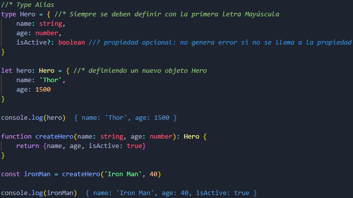

Type Alias
Los Type Alias son tipos de datos definidos por el usuario con nombres alternativos, esto sirve para darle más semántica al lenguaje.
Yo lo entiendo, en el caso de los objetos, como si fuera una especie de Clase.

Optional Properties
ReadOnly
Esta palabra reservada, antes de cualquier propiedad, permite alterar su mutabilidad, convirtiendóla en una propiedad de solo lectura.
Templete Union Types